假设函数y=f（x）关于变量x在两个有限界限x=x0和x=X之间连续，我们用x1，x2，…，xn-1来表示x的位于这两个限之间的一些新值，并假定它们在第一个限与第二个限之间或者总是递增，或者总是递减[1].我们可以用这些值将差X-x0划分成元素
（1） x1-x0，x2-x1，x3-x2…，X-xn-1，
这些元素都有相同的符号[2].作了这样的划分后，我们将每个元素与该元素左端点所对应的f（x）值相乘，即：元素x1-x0乘以f（x0），元素x2-x1乘以f（x1），…，最后，元素X-xn-1乘以f（xn-1），同时设
（2） S=（x1-x0）f（x0）+（x2-x1）f（x1）+…+（X-xn-1）f（xn-1）
是这样一些乘积的和．显然量S将依赖于：第一，差X-x0被分成的元素个数n；第二，这些元素的数值，从而也就依赖于所采用的划分方法．注意到以下事实十分重要：如果这些元素的值变得非常小而数n变得非常大，那么划分方法对S的值将没有实质性影响[3].这一点可具体证明如下．
如果假设差X-x0的所有元素化简成一个差，也即与其自身相同的差，直接得到
（3） S=（X-x0）f（x0）．
反之，如果用（1）表示差X-x0的元素，则由等式（2）得到的S的值就等于这些元素的和乘以系数f（x0），f（x1），…，f（xn-1）的一个平均值（参见《分析教程》引言部分，定理Ⅲ的推论）[4].而且，由于这些系数都是与θ有关的表达式f［x0+θ（X-x0）］的值（θ介于0到1之间），可以证明（通过类似于在“十七讲”中所使用的推理[5]）我们所感兴趣的平均值是同一个表达式的另一个值，这个值也与在相同界限中的θ值有关．这样我们代换等式（2）就得到
（4） S=（X-x0）f［x0+θ（X-x0）］，其中θ是小于1的数[6]．
把这种划分方式变换为另外一种方式，也就是X-x0的元素数值更小一些，可以把表达式（1）中的每一部分划分成新的元素．在等式（2）的第二项中，把乘积（x1-x0）f（x0）替换为类似形式的乘积（x1-x0）f［x0+θ0（x1-x0）］之和，其中θ0是小于1的非负数．我们希望在这个和与乘积（x1-x0）f（x0）之间的关系类似于由等式（4）和（3）产生的S值之间的关系．基于同样的原因，替换乘积（x2-x1）f（x1）为形如（x2-x1）f［x1+θ1（x2-x1）］之和，其中θ1仍然是小于1的非负数．继续这样下去，可以推导出在新的划分方式下，S的值将会是以下形式：
（5） S=（x1-x0）f［x0+θ0（X-x0）］+（x2-x1）f［x1+θ1（x2-x1）］+…+（X-xn-1）f［xn-1+θn-1（X-xn-1）］．
如果令
f［x0+θ0（x1-x0）］=f（x0）±ε0，
f［x1+θ1（x2-x1）］=f（x1）±ε1，
………………
f［xn-1+θn-1（X-xn-1）］=f（xn-1）±εn-1，
则有
（6） S=（x1-x0）f［x0±ε0］+（x2-x1）f［x1±ε1］+…+（X-xn-1）f［xn-1±εn-1］
展开得到
（7） S=（x1-x0）f（x0）+（x2-x1）f（x1）+…+（X-xn-1）f（xn-1）±ε0（x1-x0）±ε1（x2-x1）±…±εn-1（X-xn-1）
需要补充一点的是，如果元素x1-x0，x2-x1，x3-x2…，X-xn-1取非常小的数值，那么每一个±ε0，±ε1，…±εn-1都趋近于零；因此，和±ε0（x1-x0）±ε1（x2-x1）±…±εn-1（X-xn-1）也是趋近于零，等价于X-x0与这些不同量的平均值的乘积．之所以成立，是因为比较方程（2）和（7），当我们以差X-x0的元素取非常小的数值的方式进行划分，或是如果以第二种方式进行划分，也即这些元素的被划分成更多部分计算时，并没有明显[7]地改变S的值．
现在我们来考虑差X-x0的两种不同的划分方法，在两种分法中这个差的所有元素的数值都非常小．我们可以将这两种分法与第三种分法进行比较，后者是这样选取的，使得前两种划分中的任一元素，都可以看作是由这第三种划分的若干元素合并形成．为了满足这一条件，只要使前两种划分中位于x0和X两限之间的每一个x值在第三种划分中全部被用到．我们可以证明，当从第一种或第二种划分转为第三种划分时，S的值只有很微小的变化——因此从第一种划分转为第二种划分时情形也一样．于是当差X-x0的元素变为无限小时，划分方法对S的值的影响无足轻重[8]；这样，如果我们让这些元素的数值随着它们个数的无限增加而无限减小，S的值最终将变为常数[9].或者说，它最终将达到一个确定的极限，而这个极限仅依赖[10]于函数f（x）的形式和变量x的边界值x0和X.这个极限就叫做定积分．
现在如果我们用Δx=h=dx来表示变量x的一个有限增量，构成S值的不同项使得乘积
（x1-x0）f（x0），（x2-x1）f（x1），…
都包含在通式
（8） hf（x）=f（x）dx
中，乘积可以一一被推导出来，首先设
x=x0 和 h=x1-x0，
然后是
x=x1 和 h=x2-x1，…
这样我们可以说，S是形如表达式（8）的乘积的和，通常使用符号∑表示，写作
（9） S=∑hf（x）=∑f（x）Δx，
这样表示定积分很方便，当差X-x0的元素趋于无穷小时，S收敛，利用符号∫hf（x）或∫f（x）dx，字母∫代替了∑，不再表示形如表达式（8）的乘积之和，而是表示这种类型乘积的和的极限．而且，由于定积分的值依赖于变量x的边界值x0和X，因此把这两个值的第一个放在积分号∫的下面，第二个放在上面，并且都放在∫的一边，这样的记法很简便，用以下符号来表示[11]：
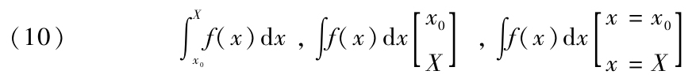
第一个符号是傅里叶发明的，也是最为简洁的．当函数f（x）替换为一个常量时，我们发现，无论差X-x0的划分方式是什么，都有S=a（X-x0），而且由此可以得出
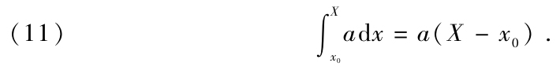
如果在上式中令a=1，得到
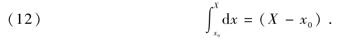
根据上一讲内容，如果把X-x0划分成无穷小元素x1-x0，x2-x1，x3-x2…，X-xn-1，和
（1） S=（x1-x0）f（x0）+（x2-x1）f（x1）+…+（X-xn-1）f（xn-1）
会收敛于一个由定积分
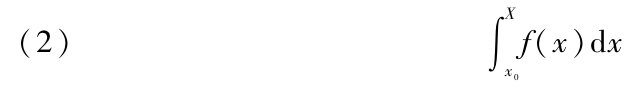
表示的极限．
由已知原理可建立这个命题，如果S的值不是由方程（1）求得，而是由类似于方程（5）和（6）（“二十一讲”）的公式求得，也会得到相同的极限，也就是说，如果我们假设
（3）S=（x1-x0）f［x0+θ0（x1-x0）］+（x2-x1）f［x1+θ1（x2-x1）］+…+（X-xn-1）f［xn-1+θn-1（X-xn-1）］，
θ0，θ1，…，θn-1是小于1的非负数，或者
（4） S=（x1-x0）f［x0+ε0］+（x2-x1）f［x1+ε1］+…+（X-xn-1）f［xn-1+εn-1］
ε0，ε1，…，εn-1表示那些与差X-x0的元素一起消失的数．如果令
θ0=θ1=…=θn-1=0，
上述第一个公式就是方程（1），或者，令
θ0=θ1=…=θn-1=1，
就得到
（5） S=（x1-x0）f（x1）+（x2-x1）f（x2）+…+（X-xn-1）f（X）．
在上面最后这个公式里，如果每一个在两个量x0和X之间的那些值交换次序，就得到一个新的S值，这个值与方程（1）产生的值大小相等、符号相反．因此，这个新的S值的极限将会收敛，并与积分（2）大小相等、符号相反，可以通过互换x0和X而得到．因此通常有
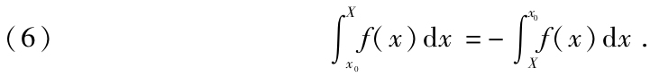
我们经常利用公式（1）和（5）来求趋近于定积分的值．为简便起见，一般假设这些公式中的量x0，x1，x2，…，xn-1，X是一个等差数列．那么差X-x0的元素就等于
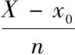
；用i表示这个分数，方程（1）和（5）就化简成以下两个方程：（7） S=i［f（x0）+f（x0+i）+f（x0+2i）+…+f（X-2i）+f（X-i）］
（8） S=i［f（x0+i）+f（x0+2i）+…+f（X-2i）+f（X-i）+f（X）］．
然后，再假设x1，x2，…，xn-1，X构成一个等比级数，这个级数的几何增减率与1相差无几．根据这样的假设，并且令
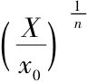
=1+α，由公式（1）和（5）得到两个新的S值；第一个是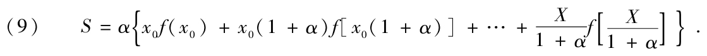
在很多情形中，由方程（7）和（9）不仅可以得到趋近于积分（2）的值，而且还可以得到它的精确值或是limS[12]．
例如：
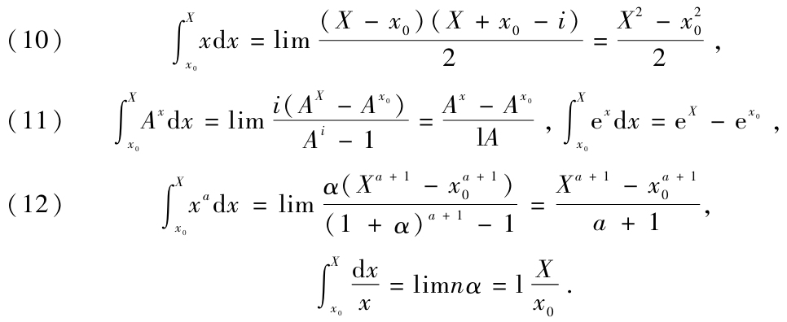
最后一个方程仅当x0、X符号相同时成立[13].需要补充说明一点，往往较易把求一个定积分转化为求相同类型的另一个积分．例如，由公式（1）可得到
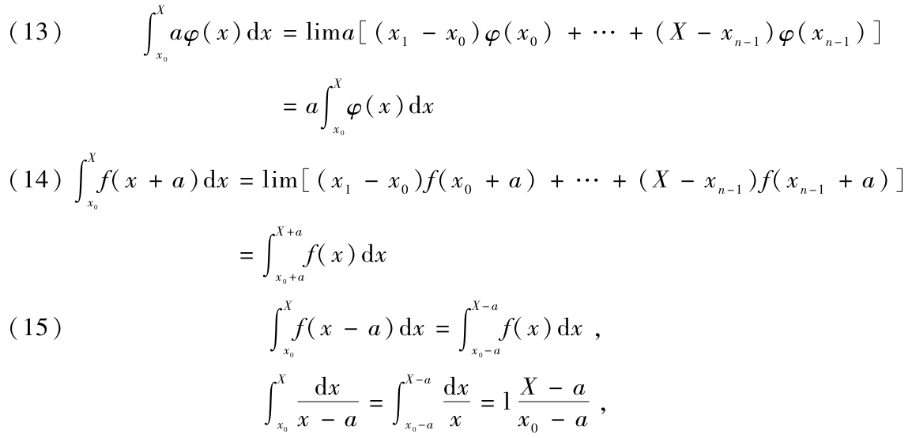
上述最后一个方程仅当x0-a与X-a符号相同时成立[14].而且在公式（8）中令x0=0，f（x）替换为f（X-x），则可得到
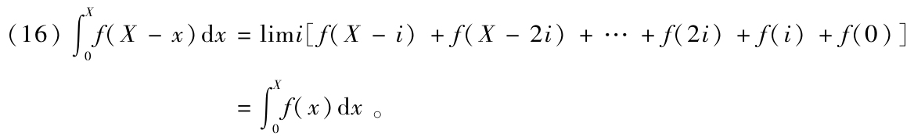
再看方程（14），由公式（8）可得
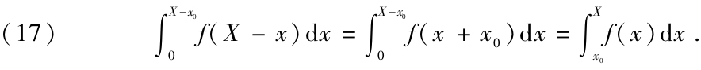
最后，如果在公式（9）中令f（x）=
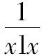
、l（1+α）=β，则得到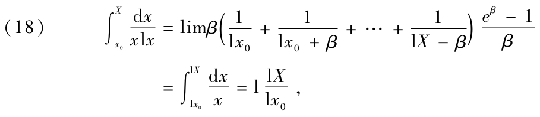
其中的x0、X为正数且同时大于1或同时小于1[15]．
上一讲中的方程（4）和（5）中的S值的不同形式都收敛于积分（2）．因此，如果把差X-x0或是x1-x0，x2-x1，x3-x2…，X-xn-1划分成无穷小元素，用其中一个方程来替换另一个方程，那么，它们在趋于极限时仍然成立，并且有
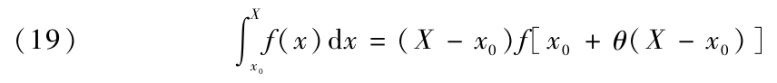
以及
（20）
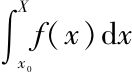
=（x1-x0）f［x0+θ0（x1-x0）］+（x2-x1）f［x1+θ1（x2-x1）］+…+（X-xn-1）f［xn-1+θn-1（X-xn-1）］，θ，θ0，θ1，…，θn-1表示小于1的非负数．为简便起见，如果我们假设量x1-x0，x2-x1，x3-x2…，X-xn-1彼此相等，设i=
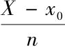
，则有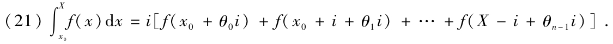
如果函数f（x）自x=x0到x=X一直是递增或递减的，公式（21）的第二个元素明显介于方程（7）和（8）所产生的两个S值之间——差是±i［f（X）-f（x0）］的两个值．因此，基于这样的假设，用这两个值的和的一半或是表达式
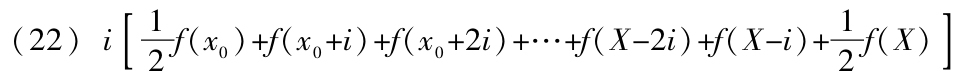
来代替积分（21）所趋近的值，这样就产生了一个比半差±
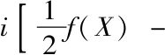
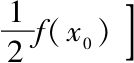
小得多的误差．例如：
如果假设f（x）=
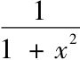
，x0=0，X=1，i=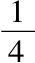
，表达式（22）就变成
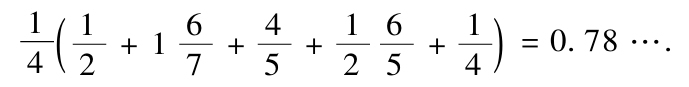
因此，积分
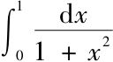
趋近0.78.在本例中产生的误差不大于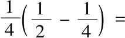
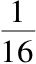
.事实上，我们在后面将可以看到，这个误差小于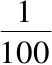
[16]．如果函数f（x）在边界限x=x0和x=X之间时而递增时而递减，我们在用方程（7）和（8）所产生的其中一个S值来代换积分（2）的趋近值过程中所产生的误差显然小于ni=X-x0与由差
（23） f（x+Δx）-f（x）=Δx（f′（x+θΔx））
所产生的最大值的乘积，其中我们假设y包含介于x0和X之间的x值以及介于0和i之间的Δx的值．这样，如果我们称f（x）当x自x=x0到x=X变化时取得的最大值为k，所产生的误差一定介于-ki（X-x0）和+ki（X-x0）之间．
把定积分
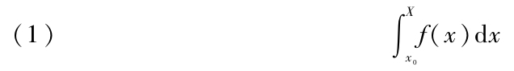
分解成多个与之相同类型的定积分，可以把符号∫下的函数进行分解，也可以将差X-x0进行分解．假设
f（x）=φ（x）+χ（x）+ψ（x）+…
可得
（x1-x0）f（x0）+…+（X-xn-1）f（xn-1）
=（x1-x0）φ（x0）+…+（X-xn-1）φ（xn-1）
+（x1-x0）χ（x0）+…+（X-xn-1）χ（xn-1）
+（x1-x0）ψ（x0）+…+（X-xn-1）ψ（xn-1）+…，
取极限，得到
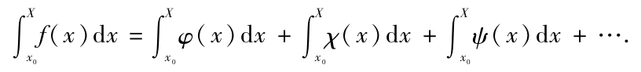
由上式，与方程（13）（“二十二讲”）联立，用u，v，w表示变量x的不同函数，用a，b，c表示常量，即得到
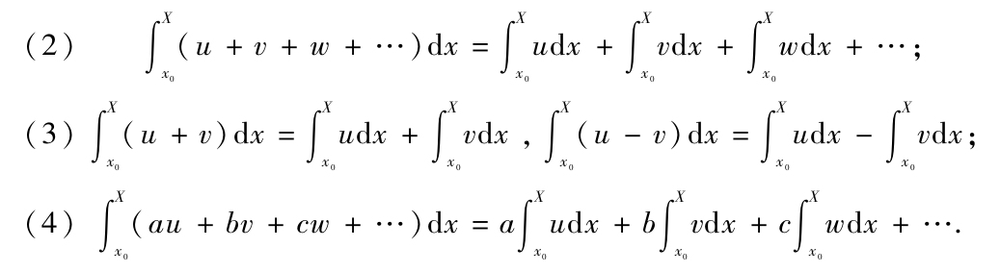
如果f（x）为虚函数，按照积分（1）的定义展开，当常量a，b，c为虚常数时，方程（4）仍然成立．因此，有
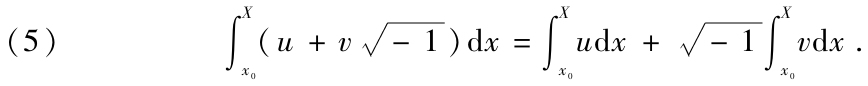
现在假设在将差X-x0分割成多个元素x1-x0，x2-x1，x3-x2…，X-xn-1之前，把每一元素都划分成许多无穷小的元素，结果，改变了由方程（1）（“二十二讲”）产生的S值．乘积（x1-x0）f（x0）被替换为那些形如以定积分
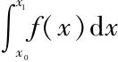
为极限的乘积的和．同样地，乘积（x2-x1）f（x1），…，（X-xn-1）f（xn-1）将由那些以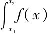
dx，…，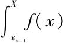
dx为极限的和所替换．而且，重新结合这些不同的和，会得到一个总和，这个总和的极限就是积分（1）．于是，由和的极限等于极限的和，有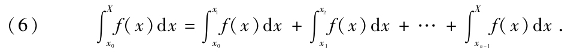
需要注意的是，整数n是一个有限值．如果在x0和X之间插入x的一个值ξ，方程（6）变成
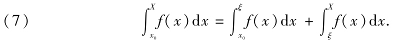
易证，当x1，x2，…，xn-1，ξ中的一些值没有被包含在x0和X之间时，方程（6）和（7）仍然成立，而此时差x1-x0，x2-x1，x3-x2…，X-xn-1，ξ-x0，X-ξ的符号不再相同．比如，差ξ-x0，X-ξ的符号相反．另外，假设x0介于ξ和X之间，或者是X介于x0和ξ之间．将会得到
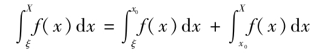
或者
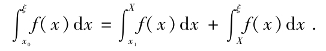
但是，通过“二十二讲”中的公式（6），可以证明我们得到的这两个方程是如何与方程（7）一致的．后者在所有假设情形中都成立，无论x1，x2，…，xn-1是什么，都可以从中推导出方程（6）．
在前一讲中可以看到，如果函数f（x）自x=x0到x=X一直递增或是一直递减，不仅易求趋近于积分（1）的值，而且也易求所产生误差的极限．当后一个条件不能满足时，利用方程（6）可以把积分（1）分解成多个积分，对于每一个积分来说，都满足相同的条件．
现在假设边界值X大于x0，函数f（x）自x=x0到x=X一直为正，x、y表示直角坐标，A是一张平面，这张平面的一部分包含在x轴和曲线y=f（x）之间，另一部分包含在纵坐标f（x0）和f（X）之间．这张底在x轴上的长度为X-x0的平面，其面积等于底为X-x0、高分别是对应于这个底的不同点处的纵坐标的最小值和最大值的两个矩形面积的平均值．这样，就等于高是由f［x0+θ（X-x0）］表示的纵坐标的平均值的矩形；因此有
（8） A=（X-x0）f［x0+θ（X-x0）］表示小于1的数．
如果我们把底X-x0划分成非常小的元素x1-x0，x2-x1，x3-x2…，X-xn-1，平面A也被划分成与之相应的元素，这些元素的值由类似于公式（8）的方程给出．这样就有
（9） A=（x1-x0）f［x0+θ0（x1-x0）］+（x2-x1）f［x1+θ1（x2-x1）］+…+（X-xn-1）f［xn-1+θn-1（X-xn-1）］，
θ0，θ1，…，θn-1，θ表示小于1的数．如果在这个方程中无限地减小X-x0元素的数值，取极限得到
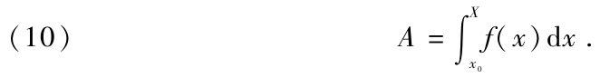
例如：
把公式（10）应用于曲线y=ax2，xy=1，y=ex，…[17]．
在结束本讲之前，我们来揭示实定积分的一个显著特征．如果假设f（x）=φ（x）χ（x），其中φ（x）和χ（x）是在边界限x=x0到x=X之间连续的两个新函数，第二个函数在这些边界限之间保持符号不变，在“二十二讲”中由方程（1）给出的S值将变成
（11）S=（x1-x0）φ（x0）χ（x0）+（x2-x1）φ（x1）χ（x1）+…+（X-xn-1）φ（xn-1）χ（xn-1），
并且等于和
（x1-x0）χ（x0）+（x2-x1）χ（x1）+…+（X-xn-1）χ（xn-1）．
乘以系数φ（x0），φ（x1），…，φ（xn-1）的平均值，或者是，乘以形如φ（ξ）的一个量，其中ξ表示介于x0和X之间的x的一个值．这样就得到
（12） S=［（x1-x0）χ（x0）+（x2-x1）χ（x1）+…+（X-xn-1）χ（xn-1）］φ（ξ），
求S的极限，有
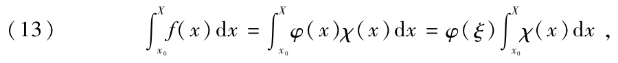
ξ是介于x0和X之间的x的一个值．
例如：
如果依次令
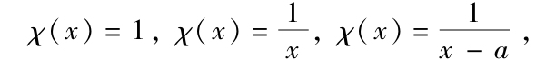
得到公式
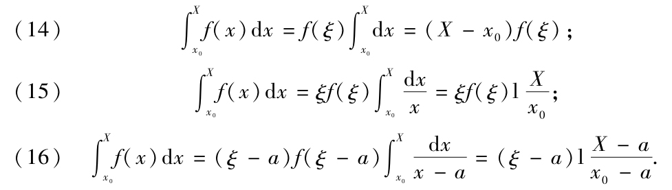
第一个公式与“二十二讲”中的方程（19）一致．需要补充说明的是，总是假定在第二个公式中的关系式
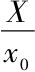
以及第三个公式中的关系式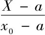
为正[18]．在前几讲中，我们已经论证了定积分
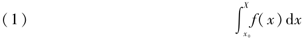
的许多显著性质，但是这些性质成立的前提是，边界限x0、X是定值，然后是函数f（x）在这两个边界限之间有限且连续．如果满足这两个条件，在边界限x0和X之间插入新的x值x1，x2，…，xn-1，得到：
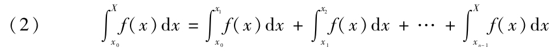
当这些中间值简化为两个值时，其中一个值ξ0趋近于x0，另一个值ξ趋近于X，方程（2）变成
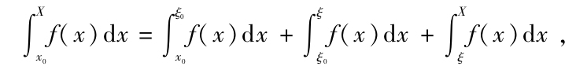
可以记作
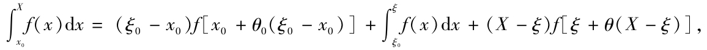
其中θ0，θ表示两个小于1的非负数．如果在上式中，ξ0趋近于x0且ξ趋近于X，取极限得到
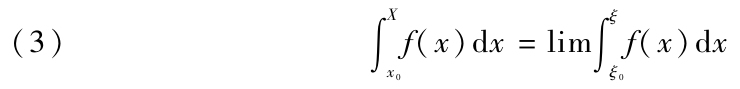
如果边界限x0、X是无穷大，或者，若函数f（x）在x=x0到x=X之间并非是有限且连续的，则我们不敢确定前面讲座中的S所表示的量有一个确定的极限，因此，通常用来表示S的极限的符号（1）的具体含义[19]也有所改变．为了去掉所有不确定的因素，并且在所有情形中为符号（1）赋予一个清晰而精确的定义，即使并不能严格地进行论证，但只要以类推法[20]展开方程（2）和（3）即可，在一些例子中可以看到这种情形．
首先，考虑积分
如果以ξ0和ξ表示两个变量，第一个变量趋近于极限-∞，第二个变量趋近于极限∞，则公式（3）变为
这样，积分（4）的值就是正无穷大．
然后，考虑积分
两个上下限的其中一个是无穷大，而另一个使得符号∫下的函数也即为无穷大．以ξ0和ξ表示两个正值，第一个趋近于0，第二个趋近于极限∞，写成公式（3）的形式
这样积分（5）也是一个正无穷大．
如果变量x和函数f（x）都对于积分（1）的其中一个边界限保持有限，则可以把公式（3）写成以下两种形式之一：
由上述方程可以得到以下结果：
现在考虑积分
其中符号∫下的函数也即，对于两个边界限x=-1、x=1之间的值x=0是无穷大．写成公式（2）的形式，得到
这样积分（8）的值似乎是不确定的．事实上，如果以ε表示一个无穷小量，以μ，ν表示任意的两个正常数，由（6）中的公式得到
因此，公式（9）变成
而且，积分（8）会产生一个完全不确定的值，因为这个值将是一个任意常数的“纳皮尔对数”[21]．
现在假设函数f（x）对于两个边界限x=x0、x=X之间的x值x1，x2，…，xm是无穷大．如果ε表示一个无穷小量，μ1，ν1，μ2，ν2，…，μm，νm表示任意的正常数，由公式（2）和（3）有
如果极限x0、X替换为-∞、∞，将得到
μ，ν表示任意两个正常数．在公式（13）的等式右端，如果x0和X其中之一变成无穷大时，则以X代替或以x0代替.由方程（12）和（13）推导出来的积分
的值可能是无穷大或是有限而确定的量或是不确定的量，这取决于函数f（x）的性质，也与任意常数μ，ν，μ1，ν1，…，μm，νm的任意值有关．
如果在公式（12）和（13）中把任意常数μ，ν，μ1，ν1，…，μm，νm都简化为1，将会得到
如果（14）中的积分变得不确定，方程（15）和（16）的每一项都可以产生一个唯一的值，我们称之为“主值”．如果把积分（8）看作一个例子，虽然一般而言这个值是不确定的，但是我们会发现其主值为零．
（周畅 译，李文林校）
[1]今天称最后这个条件为“单调性”．
[2]因为单调性的要求．
[3]影响微乎其微．
[4]柯西全集S.Ⅱ，t.Ⅲ
[5]本文未选录此讲．尽管在我们所选录的讲座中，柯西并没有证明这一点，但是这并不困难，可以直观地发现为什么这是正确的．因为0<θ<1，函数单调，f［x0+θ（X-x0）］介于f（x0）与f（x）之间，因此对于适当的θ，f［x0+θ（X-x0）］即为所求的平均值．
[6]正如前面所注明的，柯西把我们称之为正实数的数称为数．因此，这个条件表示θ是介于0与1之间的数（柯西此前已明确说明）．
[7]显然地．
[8]影响微乎其微．
[9]显然地．
[10]也即，对于每个给定端点的函数，有且只有一个极限．
[11]在第二个和第三个表达式（已不再使用）中，上下标的顺序似乎颠倒了．也许是印刷错误，也许是柯西的描述仅与第一种符号相符．
[12]柯西的意思是，当i和α趋于0时的极限．
[13]正如在“第三讲”中所指出的，因为柯西担心可能取到负数的对数，所以他这样规定以使其合理．
[14]同样，柯西担心取到负数的对数．
[15]对数函数在1两侧改变符号，因此，需要保证上述最后一项（也即，两个对数的商的对数）的自变量为正．
[16]此积分的精确小数值是0.785398…．
[17]柯西把这个作为练习留给读者．
[18]这样可以保证对数函数的自变量为正值．
[19]Sens（含义）．
[20]d'étendre par analogie（类推法）．
[21]今天称之为“自然对数”．